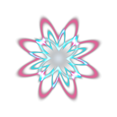
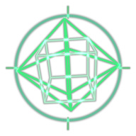
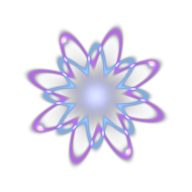

EXHAUSTION
Engages S-Curve, boosts drive (+12x), compensates output gain, and drives waveshaping toward hard asymmetric clipping.
An 8-stage signal-corruption processor engineered for Akai MPC standalone hardware: Auto Input gain staging, bypassable S-Curve & Exhaustion clipping with pre/post filter ordering, Dual Filter (Clean / 3-band Vowel Formant / Acid 303 / Digital) across Serial, Parallel, Stereo L/R & Mid/Side routing, bit & rate Info Decay, 6-shape Noise/Tone FM, 2×6 LFO + 4-target Envelope Follower Matrix, 128-pattern touch-editable Trance Gate with Offset, 4-target Sidechain Pumper (PEAK/RMS + 4×4), Color Ping-Pong Delay, 2 ms Lookahead Clean/LMC Limiter, and a 4-theme real-time SCOPE visualizer.
Zero runtime heap allocations, denormal-flushed inner loops, and 16-sample sub-block filter coefficient updates for tight ARM CPU headroom.
Perform full-chain sound design from eight 180×180 bioluminescent concave orb-knobs.
Every macro stores your underlying parameter calibration inside baseValues_[] —
returning a macro to 0.00 cleanly restores your exact patch without drift.
Engages S-Curve, boosts drive (+12x), compensates output gain, and drives waveshaping toward hard asymmetric clipping.
Sweeps Filter A downward and Filter B (inward in Serial or downward together in Parallel/Stereo/M/S) while boosting resonance.
Engages digital degradation toward 2-bit resolution and up to 12x sample-rate crushing with pixelated telemetry feedback.
Pushes global wet mix toward 100% while blending internal Noise Oscillator injection and Filter FM grit into the filter bus.
Expands LFO 1 & LFO 2 modulation depths across Filter A/B while scaling both LFO frequencies into fast rhythmic wobble.
Engages tight short comb-filter delay feedback toward metallic ringing alongside Filter A/B nonlinear grit.
Engages synced 1/16th Trance Gate chopping, tightening Attack/Hold/Release and deepening Depth + Floor contrast.
Activates the final 2 ms lookahead Limiter in LMC 20:1 squash mode with up to +18 dB drive and full parallel slam.
Every screen pairs organic textured bays with Q-Link-aligned 4-control blocks, Cyan A / Magenta B engine coding, baked icon switches, and live hardware telemetry.
Two Q-Link performance rows of 4 concave orb-knobs each, built for immediate build-ups, drops, and transition sweeps on stage.
Bypassable waveshaper with smooth tanh or Exhaustion clipping, Filt→Sat order swap to saturate after Dual Filters, Auto Gain, continuous 2–16 bit / 1–32x Info Decay + Exh Link with live #FF4D8D decay strip, and Auto Input Gain Staging.
Cyan Filter A & Magenta Filter B offering Clean SVF, 3-band morphing Vocal Vowel formants, Acid diode-ladder bite, and Digital shapes across LP/HP/BP/Notch, dual live Freq×Res XY pads, and Serial, Parallel, Stereo (L→A/R→B) & M/S (Mid→A/Side→B) routing.
Two 0.1–20 Hz multi-wave LFOs paired on a full-width X×Y control pad, a 6-waveform Noise/Tone Oscillator (White, Pink, Sine, Tri, Saw, Square) insertable Pre-D, Pre-F, or Post with Filter FM depth, plus global Env Cut & Env Drive depth.
Twelve bipolar routing depths connecting LFO 1 & LFO 2 to Filter A & Filter B Cutoff, Resonance, and Grit, plus four dedicated Envelope Follower modulation slots reacting in real time to input dynamics.
128 rhythmic patterns (House, Techno, DnB, Trap, Euclidean, Afro-Latin, Glitch, Sparse), 16 touch-editable Step buttons on screen, bipolar Gate Offset (−100%..+100%) for swing and transient protection, and Start/Hold/End/Floor AHDS envelope with live graph.
PEAK/RMS envelope detector (Ratio 1:1–20:1, HPF/LPF key filters) with internal signal or self-clocked 4×4 Test Pulse source, independent SC Drive / SC Cut / SC Gain / SC Reso target switches, and vertical IN cyan & DUCK magenta LED meters.
Conditional Time (1–2000 ms) or Tempo Sync (1/16–1/2) Stereo Ping-Pong Delay featuring Delay Color (from warm saturated Dub Tape at −1.00 to shimmering Chorus spread at +1.00), feeding a 2 ms lookahead Clean / LMC Limiter with horizontal GR meter.
Driven at ~30 Hz by 8 read-only telemetry signals (Phase, Pulse, Twin Lissajous X/Y Orbits, and L/R Wing Meters) with all 16 hardware Q-Links live for real-time stage tweaking (8 Macro Orbs on Q9–16; Drive, Mix, Delay FB/Mix, Filter Cut/Reso & LFO 1 Freq on Q1–8). Flip between four distinct visual themes anytime using the upper-right touchscreen pills — your active theme persists automatically across factory preset changes.

Signature cyan/magenta Lissajous warp tunnel, 6-fold blooming sacred mandala core, orbiting plasma stars, and dual wing meters.
Obsidian-crimson plasma vortex, 12-point solar eclipse corona with expanding shockwave rings, molten gold & red-dwarf orbs.

CRT phosphor horizon grid, 3D perspective octagonal wireframe corridor, spinning octahedron/cube lock reticle & acid-mint radar ticks.

Midnight ultraviolet abyss, flowing bioluminescent caustic ribbons, 8-petal glowing lotus nebula & orbiting pearl micro-moons.
Organized across 16 prefix groups for fast hardware browsing. Every preset updates knobs, switches, 16-step patterns, and Q-Links cleanly while keeping your chosen SCOPE visual theme locked in place.
Init, Warm Tape Sat, Dual Resonator, Crushed Velvet, Rhythmic Gater, Mushin Pumper.
Forest FM Lead, Rolling Bass 16, Dark Squelch, Alien Formant, Night Riser, Magic Acid Gate, Euclid 7/16, Goa 303, Neuro Chop.
Hard Clip, Warm Bus, Velvet Tape, Tube Glow, Sub Crunch, Fuzz Wall, Edge Bite, Master Glue, Burned Coil.
Acid Sweep, Parallel Band, Notch Phaser, 303 Squelch, Dual Peak, Sub Focus, Telephone, Stereo Split, Notch Canyon.
Talkbox, Choir Dual, Talking Gate, Oh-Ah Morph, Robot Throat, Acid Choir, Cyber Mouth, Nasal Scream.
8-Bit Arcade, Lo-Fi Dust, Exh Shred, Gameboy Lead, CRT Static, Mod Bit-Rot, Broken Tape, 4-Bit Savage.
Alien FM, Wobble Bass, Shimmer S&H, Crossfade Mod, Hyper Flutter, Sci-Fi Siren, Stepped Arps, Dual Drift.
Kick Safe (+35% Offset), Euclid 7, DnB Chop, Trance Arp, Triplet Hop, Galop Ride, Trap HiHat, Son Clave, Glitch Stutter.
House Duck, Test Pulse 4x4, Kick Keyed LPF, Vacuum Drop, Filter Breathe, Drive Surge, French Touch.
MUSH Full Chaos & Everything On flagships, Sub Slam, Acid Rave, Industrial, Dub Techno, Drum Smash, Vaporwave.
Wide Dual Tilt, PingPong Formant, Acid Counterpan, Crunch Split.
Sub Focus & Air, Mid Acid Side Glow, Width Breather, Side Shatter, Mono Kick Wide Tops, Dub Tape Center, Neuro Orbit.
Lush M/S Bloom, CS-80 Horizon, Juno Milky Chorus, Boards VHS Drift, D-50 Cathedral, Burial Night Rain, Orbital Mirage.
Pluck Dynamic, Stereo Supersaw, Acid Lead Express, Neon Stutter, Polyrhythm Arp, Mid Punch Stack.
Outrun Tape Lead, Juno Chorus Wash, VHS Dream Keys, Neon Night Drive, Retro Gate Arps, CRT Cyber Bass.
Air & Velvet, AM Radio Megaphone, Dub Throw Echo, Throat Doubler, Tight Slap Tape, Formant Shifts, Haunted Cathedral, Hyper Future Vox.
Compatible with MPC X, X SE, Live, Live II, One, One+, Key 61, Key 37, Force (32-bit arm32) and MPC Live III / MPC XL (64-bit arm64).
plugins/Mushin with python tools/build.py plugins/Mushin) and unzip it.PhilippeBack - VST - Mushin into VST2 Plugins at the root of a drive/SD card (or deploy over Wi-Fi/Ethernet SSH via python tools/mpc_remote.py <ip> add plugins/Mushin --drive <N>) and restart the MPC.